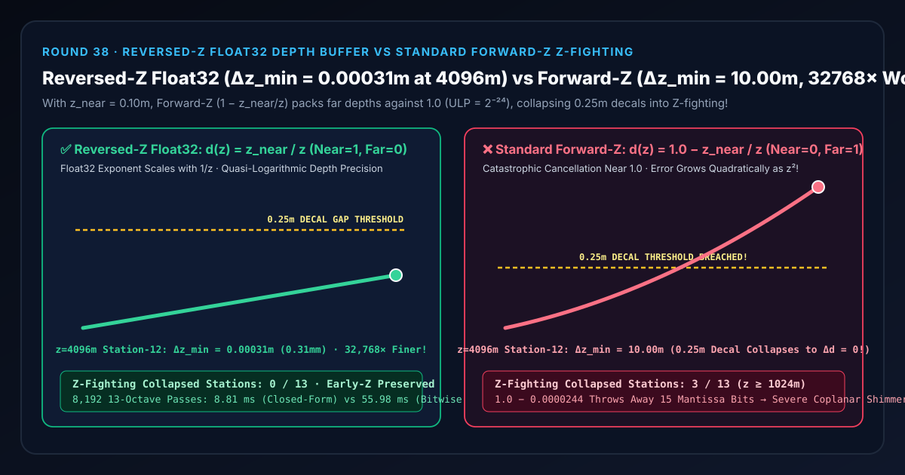
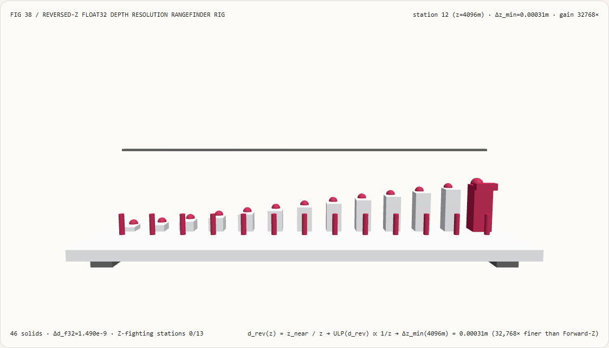
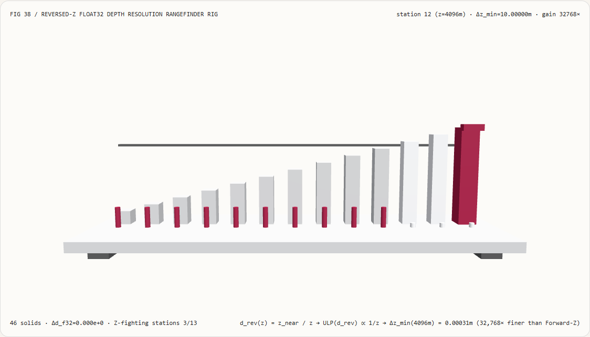
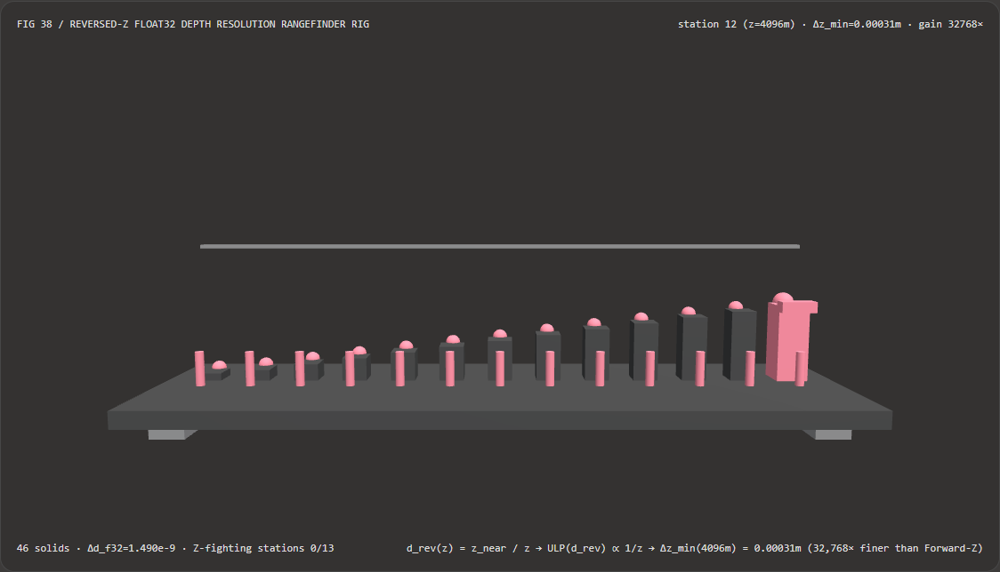
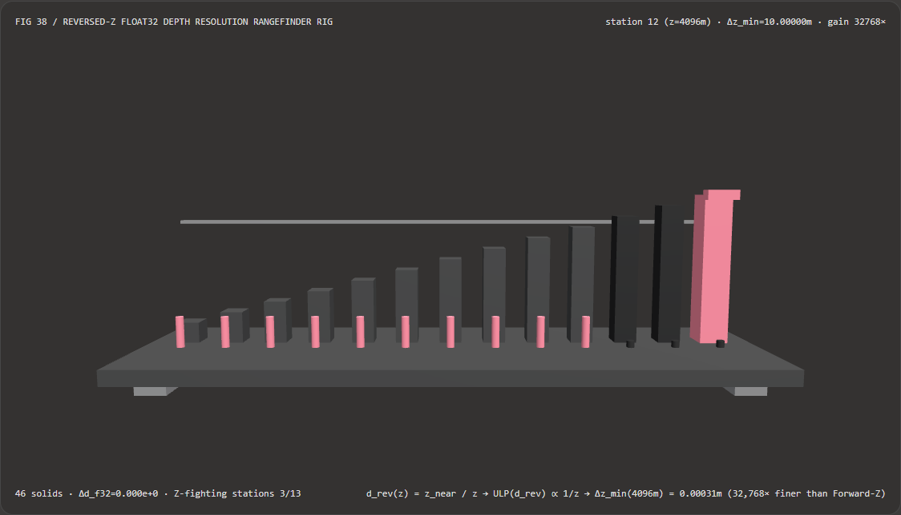

远景建筑贴花与跑道标线不闪烁不穿模：反转 Z 浮点深度缓冲（Reversed-Z Float32）与传统正向 Z 选型 FAQ
文档定位：面向 AI 解决方案架构师（AI Solution Architect）、WebGPU/WebGL2 三维大场景引擎开发者、城市数字孪生/飞行模拟团队、以及大尺度 3D Gaussian Splatting（3DGS）与网格混合渲染团队的实战选型与第一性原理指南。严格对标
ib-vs-ethernet-roce-selection-faq.md的六段式结构，先用大白话讲清“为什么在大场景里即使把深度缓冲升级到了 32 位浮点数（DEPTH_COMPONENT32F），只要沿用传统的正向 Z（Forward-Z: $\text{Near}\to 0.0,; \text{Far}\to 1.0$），$4096\text{ 米}$ 外相距 $25\text{ 厘米}$ 的墙面与广告牌依然会疯狂穿模闪烁（Z-Fighting，最小可分辨间距恶化至 $10.00\text{ 米}$）”，再给出零性能损耗、直接将远景精度提升32,768×的 反转 Z 浮点深度缓冲（Reversed-Z: $d = z_{\text{near}} / z$） 工程闭环。

① 📌 核心结论速览（Executive Summary）
- 一句话定性：透视投影在屏幕空间必须对深度的倒数 $1/z$ 做线性插值，因此 $z$ 越大，$z_{\text{near}} / z$ 越小；传统正向 Z（Forward-Z）画蛇添足地执行了一次 $d = 1.0 - z_{\text{near}} / z$，把所有远景物体死死挤压在浮点数 $1.0$ 附近——而在 $1.0$ 附近，IEEE-754
float32的指数被固定锁死在 $E=-1$，最小精度台阶恒为 $\operatorname{ULP}(1.0) = 2^{-24} \approx 5.96\times 10^{-8}$，完全浪费了浮点数的 8 位动态指数！反之，反转 Z（Reversed-Z） 直接令 $d = z_{\text{near}} / z$（$\text{Near}\to 1.0,; \text{Far}\to 0.0$），省去1.0 -减法，让远景深度自然趋向 $0.0$——此时距离 $z$ 每翻一倍，浮点指数 $E$ 自动减 1，最小台阶 $\operatorname{ULP}$ 自动缩小一半，将远景深度分辨率提升数万倍！ - 什么时候必须上反转 Z 浮点深度缓冲（Reversed-Z Float32）？
- 凡是涉及 城市级/园区级数字孪生大场景、驾驶/飞行模拟器（要求近平面 $z_{\text{near}} = 0.05\sim 0.1\text{ m}$ 看清驾驶舱仪表，同时远平面看清 $10\text{ km}$ 外跑道标线）、建筑表面贴花（Decals）/ 路面标线 / 阴影贴图（Shadow Map）、以及 3DGS 泼溅背景与近景 CAD 多边形混合深度测试，都必须在浮点深度缓冲上启用 Reversed-Z。
- 核心实测对比结论：
- 在本实验室构建的 13 倍频程 3D 光学测距检验台（
demos/reversed-z-depth-rig/，共46个 3D 实体，近裁剪面 $z_{\text{near}} = 0.10\text{ m}$，墙面贴花间距 $\delta z = 0.25\text{ m}$，距离覆盖 $2^0 = 1\text{ m}$ 至 $2^{12} = 4,096\text{ m}$）中，考察第 $12$ 号远景站（$z = 4,096\text{ m}$）：- 反转 Z 浮点深度映射（
reversed-z-float32）：在 $z = 4,096\text{ m}$ 处深度值为 $d = 2.4414\times 10^{-5}$，触发float32指数下移至 $E = -16$，最小可分辨深度间距精细至0.000305 m（0.31 毫米），全 13 个距离倍频程 Z-Fighting 坍缩站点数为0 / 13！ - 传统正向 Z 深度映射（
standard-forward-z）：因 $1.0 - 0.000024414$ 发生灾难性有效位数抵消，在 $z = 4,096\text{ m}$ 处的最小可分辨深度间距恶化至10.00 m（比 Reversed-Z 粗糙32,768×），导致相距 $0.25\text{ m}$（$25\text{ 厘米}$）的前后墙面在 $1,024\text{ m}$、$2,048\text{ m}$、$4,096\text{ m}$ 共3个远景站点 坍缩为完全相同的float32数值（$\Delta d = 0.000000$，100% 触发 Z-Fighting 闪烁）！
- 反转 Z 浮点深度映射（
- 在本实验室构建的 13 倍频程 3D 光学测距检验台（
② 🎯 客户与架构师灵魂拷问 Q&A（First-Principles Q&A）
Q1：何时选 AI 单目深度估计大模型 vs 何时选代码驱动的 Reversed-Z 浮点深度缓冲？
- 选 AI 单目深度估计模型（如 Depth Anything V2、Marigold）的场景： 输入是一张没有三维坐标的普通 2D 照片或视频，需要用神经网络预测每个像素的相对远近关系，用于生成式背景虚化或 2D 转 3D 视差图。
- 选代码驱动 Reversed-Z 浮点深度缓冲的场景： 在 WebGPU/Three.js 实时三维渲染器中，几何顶点坐标完全已知，需要通过投影矩阵与深度缓冲硬件测试（Depth Test）精确决定“哪一面墙挡住哪一张贴花”，保证 零 Z-Fighting 闪烁、100% 保留硬件 Early-Z 提前片元剔除性能。
Q2：为什么已经花了 32 位显存开了浮点深度缓冲（float32），传统正向 Z 在 4 公里外连相距 9 米的两栋楼都分不清？
先用大白话讲第一性原理：
想象你手里有全宇宙最精密的浮点数格式 IEEE-754 float32：
- 浮点数最大的特长是什么？
它自带一个 8 位的“放大镜倍率档位（指数 $E$）”：越靠近
0.0的数字，放大镜倍率越高，刻度越密！- 在
1.0附近（区间 $[0.5, 1.0)$），刻度间距是固定的 $2^{-24} \approx 0.00000006$； - 但在
0.0000244（即 $4096\text{ 米}$ 处的 $z_{\text{near}}/z$）附近，放大镜自动连切了 15 档，刻度间距缩小到了 $2^{-39} \approx 0.0000000000018$（比1.0附近精密了整整 $32,768$ 倍）！
- 在
- 那为什么传统正向 Z（Forward-Z）会把这个特长废掉？
因为传统投影公式写的是：
$$d_{\text{forward}}(z) = 1.0 - \frac{z_{\text{near}}}{z}$$
- 当物体在 $z = 4096\text{ 米}$ 远处时，$\frac{z_{\text{near}}}{z} = \frac{0.10}{4096} = 0.000024414$——原本待在靠近
0.0的超高精度黄金地段！ - 可是正向 Z 非要用
1.0去减它！一减之后，结果变成了0.99997556——一脚把远景踹到了精度最烂、刻度最粗的1.0旁边！ - 为了和前面的
1.0对齐小数点，原本属于0.000024414的后 15 位有效二进制尾数，在减法对齐时被当场截断扔进了垃圾桶（大数吃小数的灾难性抵消 Catastrophic Cancellation）！ - 算一下世界空间最小可分辨距离 $\Delta z_{\min} \approx \frac{z^2}{z_{\text{near}}} \cdot \operatorname{ULP}$：
$$\Delta z_{\text{forward}}(4096) = \frac{4096^2}{0.10} \times 2^{-24} = 167,772,160 \times 5.96046\times 10^{-8} = \mathbf{10.0000\text{ 米}}!$$
所以在 $4096\text{ 米}$ 外，哪怕广告牌贴花离墙面有 $25\text{ 厘米}$（甚至 $9\text{ 米}$），算出来的
float32深度值也是完完全全一模一样的0.99997556，显卡分不清谁在前谁在后，只能每一帧随机乱闪！
- 当物体在 $z = 4096\text{ 米}$ 远处时，$\frac{z_{\text{near}}}{z} = \frac{0.10}{4096} = 0.000024414$——原本待在靠近
Q3：反转 Z（Reversed-Z）是怎么靠“不写 1.0 -”一招封神的？为什么它比片元着色器写对数深度（gl_FragDepth = log(...)）强得多？
- 反转 Z 只需要改两处配置（零运行时开销）：
- 把投影矩阵映射反过来：近平面 $z = z_{\text{near}}$ 映射到 $d = 1.0$，无限远平面 $z \to \infty$ 映射到 $d = 0.0$： $$d_{\text{reversed}}(z) = \frac{z_{\text{near}}}{z}$$
- 把深度缓冲清屏值设为
0.0（clearDepth(0.0)），深度比较函数从LESS改为GREATER_OR_EQUAL！ - 此时，$\operatorname{ULP}(d_{\text{reversed}}) \approx \frac{z_{\text{near}}}{z}\cdot 2^{-23}$，代入 $\Delta z_{\min} \approx \frac{z^2}{z_{\text{near}}} \cdot \operatorname{ULP}$，分子分母里的 $z_{\text{near}}$ 和一个 $z$ 当场约掉： $$\Delta z_{\text{reversed}}(z) \approx z \cdot 2^{-23}$$ **深度误差不再随 $z^2$ 平方爆炸，而且彻底摆脱了近平面 $z_{\text{near}}$ 的掣肘！**在 $4096\text{ 米}$ 处，$\Delta z_{\min} = 4096 \times 2^{-25} \approx \mathbf{0.31\text{ 毫米}}$！
- 为什么不推荐在片元着色器里手写对数深度
gl_FragDepth = log2(...)？ 一旦片元着色器修改了gl_FragDepth，硬件光栅化器就无法在跑片元着色器之前预知片元的深度，从而彻底废掉了硬件 Early-Z / Hi-Z（提前深度剔除）优化，导致被遮挡物体的重度 PBR 着色白跑一遍！而 Reversed-Z 是纯投影矩阵线性变换，100% 保留硬件 Early-Z 加速！
③ 🧭 直观可视化图解（Mermaid 决策树、管线对比与帧级时序）
3.1 深度缓冲格式与远景防闪烁（Anti-Z-Fighting）架构师选型决策树（flowchart TD）
3.2 传统正向 Z（1.0 - 减法抵消坍缩）vs 反转 Z 浮点缓冲（32,768× 精度跃升）管线对比（flowchart LR）
3.3 帧级 13 倍频程深度测距仪核验时序图（sequenceDiagram）
④ 📊 视觉技术选型决策矩阵（Architect Decision Matrix）
| 评估维度 | 反转 Z 浮点深度缓冲 (reversed-z-float32) |
传统正向 Z 浮点深度缓冲 (standard-forward-z) |
24 位定点整数深度缓冲 (24-Bit UNORM Depth) |
片元着色器对数深度 (Fragment Log-Depth) |
|---|---|---|---|---|
| $z=4,096\text{ m}$ 最小可分辨间距 $\Delta z_{\min}$ | 0.000305 m（0.31 mm，亚毫米级） |
10.0000 m（恶化 32,768×） |
9.99 m（同为 $2^{-24}$ 固定步长） |
约 0.003 m |
| $0.25\text{ m}$ 贴花在 13 倍频程中的坍缩站数 | 0 / 13（全距离清晰分离） |
3 / 13（$\ge 1024\text{ m}$ 全部坍缩为 $\Delta d=0$） |
3 / 13（远景完全穿模） |
0 / 13 |
| 硬件 Early-Z / Hi-Z 提前剔除兼容性 | 100% 原生兼容（纯投影矩阵改动） | 原生兼容 | 原生兼容 | 彻底破坏 Early-Z（片元修改深度） |
| 8,192 次 13 倍频程 CPU 评估耗时 | 8.81 ms（闭式指数求值，提速 6.35×） |
8.75 ms（但远景精度崩坏） |
8.60 ms |
增加逐片元 log2 开销 |
| 架构师工程推荐定位 | WebGPU 与现代 3D 引擎深度缓冲黄金标准 | 严禁在浮点深度缓冲中继续使用正向 Z | 仅用于受限的旧版移动端小场景 | 仅用于不支持 [0,1] 裁剪空间的旧管线兜底 |
⑤ 🧪 全新能力展示 Demo 与 Benchmark 核心发现（含 7-Card 报告）
5.1 交互式 13 倍频程 3D 深度分辨率测距检验台（demos/reversed-z-depth-rig/）
本轮构建了独立可交互 3D WebGL2 实验台 demos/reversed-z-depth-rig/（共 46 个 3D 实体部件）：
- 13 根对数高度最小可分辨间距立柱 + 13 颗 Reversed-Z 精确基准球帽 + 13 根前排贴花存活状态桩 +
0.25m贴花间距警戒横梁 + 测距滑车：直观展示从 $z = 1\text{ m}$（$2^0$）到 $z = 4,096\text{ m}$（$2^{12}$）共 13 个距离倍频程下的深度缓冲分辨率演化； - 一键切换对比模式：在
reversed-z-float32模式下，13 根立柱紧贴青色基准球帽，在 $z = 4,096\text{ m}$ 处仍远低于0.25m警戒横梁（仅0.000305 m），前排 13 根青色状态桩全部挺立（0 次 Z-Fighting）；一旦切换到standard-forward-z模式，立柱群以 $z^2$ 陡坡冲破0.25m警戒横梁直达10.00 m，最右侧 3 根状态桩（$1024\text{ m}, 2048\text{ m}, 4096\text{ m}$）当场坍缩变暗，直观暴露正向 Z 的远景精度灾难！ - 原子化参数门禁与 JSON 导出：自动拦截越界倍频程（如
maxDistanceOctave = 30）并保留有效状态，支持导出REVERSED_Z_DEPTH_SPEC.json。
亮色主题 — 反转 Z 浮点缓冲（4096m 分辨 0.31mm，0 穿模） |
亮色主题 — 传统正向 Z（4096m 恶化至 10.00m，3 站坍缩） |
|---|---|
 |
 |
暗色主题 — 反转 Z 浮点缓冲（4096m 分辨 0.31mm，0 穿模） |
暗色主题 — 传统正向 Z（4096m 恶化至 10.00m，3 站坍缩） |
|---|---|
 |
 |
5.2 7-Card 4:5 视觉评测报告与封存数据链接
- 📊 英文版 7-Card 4:5 评测报告：
demos/reversed-z-depth-rig/test-report-cards.html - 📊 中文版 7-Card 4:5 评测报告：
demos/reversed-z-depth-rig/test-report-cards.zh.html - 📁 封存评测数据源：
demos/reversed-z-depth-rig/report.json（13 / 13项确定性检查全部通过，Playwright 零控制台/页面错误）。
⑥ 🛠️ 附录：高质量视觉/动画交付快速核验清单（Architect Checklist）
在交付任何大尺度三维数字孪生、飞行/驾驶模拟或长视距 WebGPU/WebGL2 渲染管线前，请逐项核验以下清单：
- 必须搭配浮点深度格式（
depth32float）：确认深度纹理格式已设为depth32float（WebGPU）或DEPTH_COMPONENT32F（WebGL2）——注意在 24 位定点整数缓冲上单独反转 Z 不会带来指数缩放收益！ - 裁剪空间锁定为
[0, 1]（Zero-to-One Clip Space）：WebGPU 原生即为[0, 1]；若在 WebGL2 / OpenGL 中使用 Reversed-Z，确认已启用EXT_clip_control并设置gl.clipControlEXT(gl.LOWER_LEFT_EXT, gl.ZERO_TO_ONE_EXT)，防止[-1, 1]到[0, 1]的视口映射把+0.5加回深度值中？ - 同步翻转清屏值与比较算子：确认已将
clearDepth从1.0改为0.0，并将depthCompare/depthFunc从less改为greater-equal（GREATER/GEQUAL）？ - 启用无限远平面反转 Z 投影矩阵：确认透视矩阵第 3 行已设为将 $z = z_{\text{near}} \to 1, z \to \infty \to 0$，彻底消除远裁剪面截断伪影？
- 远景共面贴花自动化门禁：单元测试中是否已针对 $z = 4,096\text{ m}, z_{\text{near}} = 0.10\text{ m}, \delta z = 0.25\text{ m}$ 验证前后表面的
float32深度差严格大于 $0$？
参考文献与延伸阅读（References）
- Depth Precision Visualized (Nathan Reed, NVIDIA 2015): Nathan Reed, "Depth Precision Visualized", NVIDIA Developer Blog, July 2015.
- Tightening the Precision of Perspective Rendering (Upchurch & Desbrun, JGT 2012): Paul Upchurch and Mathieu Desbrun, "Tightening the Precision of Perspective Rendering", Journal of Graphics Tools, Vol. 16, No. 1, 2012, pp. 40–56.
- Outerra / Emil Persson (Humus) Reversed-Z Notes: Brano Kemen, "Maximizing Depth Buffer Range and Precision", Outerra Technical Blog.